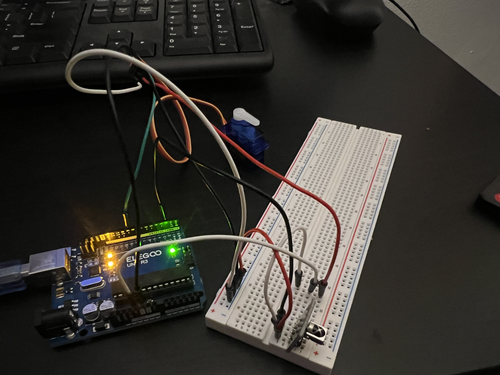
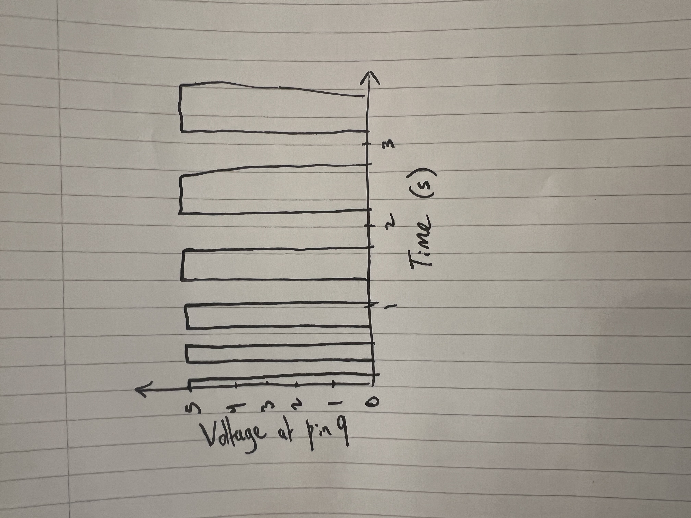

// Include the IRremote library so the Arduino can decode IR remote signals
#include
// Include the Servo library so the Arduino can generate servo control pulses
#include
// Store the digital pin used to read the IR receiver output wire
const int IR_RECEIVE_PIN = 2;
// Store the digital pin used to send the servo signal wire
const int SERVO_PIN = 9;
// Create a Servo object to can control a servo motor
Servo myServo;
// Store the servo angle for the "min" position
const int ANGLE_MIN = 0;
// Store the servo angle for the "middle" position
const int ANGLE_MID = 90;
// Store the servo angle for the "max" position
const int ANGLE_MAX = 180;
// Store the IR code for the first remote button
unsigned long CODE_MIN = 0xE916FF00;
// Store the IR code for the second remote button
unsigned long CODE_MID = 0xF30CFF00;
// Store the IR code for the third remote button
unsigned long CODE_MAX = 0xE718FF00;
void setup() {
// Start serial communication to print custom messages and debug values
Serial.begin(9600);
// Begin listening for IR signals on the IR receiver pin
IrReceiver.begin(IR_RECEIVE_PIN, ENABLE_LED_FEEDBACK);
// Attach the servo object to the servo signal pin
myServo.attach(SERVO_PIN);
// Move the servo to a known starting position
myServo.write(ANGLE_MID);
// Print an instruction so the user knows what to do first
Serial.println("IR+Servo demo: Press your remote buttons and watch the servo.");
}
void loop() {
// Check if a complete IR signal has been received and decoded
if (IrReceiver.decode()) {
// Read the decoded IR value from the IRremote library data structure
unsigned long code = IrReceiver.decodedIRData.decodedRawData;
// Print a custom message label before the raw code
Serial.print("IR code received: 0x");
// Print the raw code in hexadecimal so it is easy to copy into constants
Serial.println(code, HEX);
// If the received code matches the "min" button code, move servo to 0 degrees
if (code == CODE_MIN) {
// Command the servo to rotate to the minimum angle
myServo.write(ANGLE_MIN);
// Print a custom message confirming the action taken
Serial.println("Action: Servo moved to MIN (0 degrees).");
}
// Otherwise if the received code matches the "mid" button code, move servo to 90 degrees
else if (code == CODE_MID) {
// Command the servo to rotate to the middle angle
myServo.write(ANGLE_MID);
// Print a custom message confirming the action taken
Serial.println("Action: Servo moved to MID (90 degrees).");
}
// Otherwise if the received code matches the "max" button code, move servo to 180 degrees
else if (code == CODE_MAX) {
// Command the servo to rotate to the maximum angle
myServo.write(ANGLE_MAX);
// Print a custom message confirming the action taken
Serial.println("Action: Servo moved to MAX (180 degrees).");
}
// Otherwise, the button pressed is not one of the three mapped controls
else {
// Print a custom message explaining no mapped action occurred
Serial.println("Action: No servo move mapped to that button.");
}
// Add a short delay so repeated signals do not cause rapid jittery movement
delay(200);
// Tell the IR library we are ready to receive the next IR message
IrReceiver.resume();
}
}
Schematic & Circuit:

Including the formulas used to calculate the correct resistors per LED

Functioning circuit:
 Additional Questions:
Additional Questions:
1: Say you are using a servo motor you attach to pin 9. In your loop() you have the following code:
void loop() {
for (pos = 0; pos <= 180; pos += 1) {
myservo.write(pos);
delay(100);
}
}
Draw a graph with the x-axis as time and the y-axis as voltage at pin 9 with respect to ground.

vals = []
for i in 1..9:
vals.append(readSensor())
sort(vals)
clean = vals[4]
// median of 9 rejects rare bad spikes
return clean
3: Your input device is slightly noisy, leading the measurement to randomly deviate from the true measurement up or down by 10%.
How can we address this? Answer in (pseudo)code.
sum = 0
for i in 1..20:
sum += readSensor()
avg = sum / 20
return avg
4: Did you use AI tools in completing this assignment?
I used AI tools to assist in implementing the Servo code and
conceptual clarification with downloading libraries.